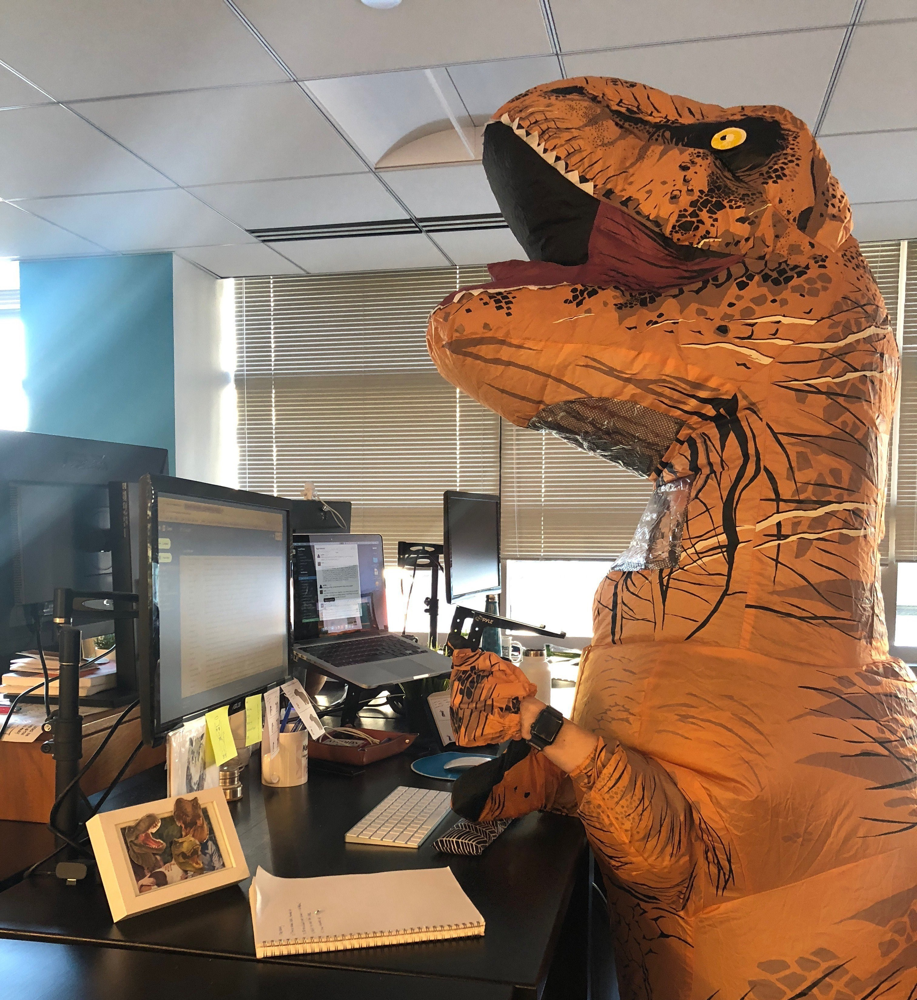

Шулик Євген

Освіта: Студент Хмельницького національного університету на спеціальності комп'ютерна інженерія
Досвід роботи:
Замісник генерального директора ChatGPT
Skills:
Досвід роботи в керівництві проектом
Вміння грати в ігри жанрів roguelite і survival попиваючи вино
Здатність до доброго відпочинку
Особисті риси:
Відповідальність і організованість
Готовність до навчання та розвитку
Мета: Отримати підвищення на своїй посаді